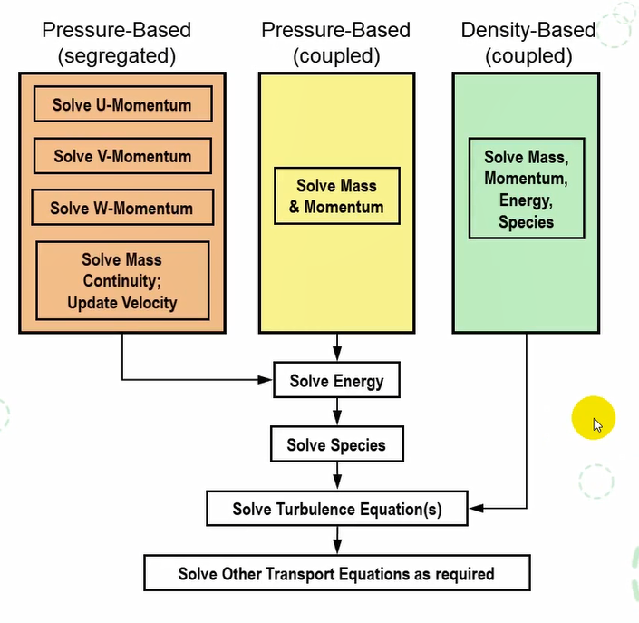

CFD学习笔记003
主要工作流程：设置、求解、结果
网格和单位
FLUENT读入网格文件后，所有的维度默认是以米为单位的
- 如果你的模型不是以米为单位建立的，你需要缩放
- 网格缩放后需要确认一下计算域的大小
- 如果需要，可以使用混合量纲统。
- FLUENT默认使用国际单位Sl
- 在Set Units面板中，可以使用任意量纲
实际操作：最左边栏的通用——打开任务界面——网格——网格缩放
鼠标功能
偏好：
物理模型
-
物理模型的本质就是求解某些变量与对应的方程
-
Fluent根据开启物理模不同，来求解不同的方程，结果中包含的变量也随之变化
-
最常见的物理模型是湍流模型(粘性)以及温度模型（能量）
- 要确定一个有唯一解的物理问题，必须指定流场边界的变量值
Fluent中的边界包括两部分内容
-
单元区域条件(cell-zone)
-
边界条件(boundary condition)
定义计算区域（边界）条件包括
-
确定位置
-
提供信息
流体域
- 流体域是一系列单元的集合，在其上求解所有激活的方程（物理模型）
多孔介质
- 多孔介质是种特殊流体域
在Fluid面板中激活多孔质域
通过用户输入的集总阻力系数来确定流动方向的压
用来模拟通过多孔介质的流动，或者流过其他均匀阻力的物体
- 堆积床
- 过滤纸
- 多孔板
- 流量分配器
- 管束
- 输入各方向的粘性系数和惯性阻力系数
粘性系数、孔隙率、等等
材料属性
-
FLUENT提供标准的材料库，也允许用户创建自己的材料
-
所选择的物理模型决定了哪些材料可用，以必须设定这些材料的哪些属性
多相流（多种材料）
燃烧（多种组分）
传热（导热系数）
辐射（发射率以及吸收率）
- 材料属性可以直接设定为温度、压力的函数
和其他变量相关需要用UDF（用户自定义函数） 设定
-
支持自定义材料数据库的保存和调用
-
支持Granta数据库
仿真里面有很多属性用不到：例如算一个普通层流的问题，材料属性一般只有两个，一个密度一个粘性（粘度）（不考虑比热、热导率）
材料属性大部分为const
边界条件
-
比单元区域条件（cell-zone）复杂
-
外部边界
-
通用
-
Pressure Inlet （压力-入口）
-
Pressure Outlet（压力-出口）
-
不可压缩流
-
Velocity Inlet(速度入口)
-
Outflow(出流边界)
-
-
压缩流
-
Mass Flow Inlet(质量流入口)
-
Mass Flow Outlet(质量流出口)
-
Pressure Far Field（压力远场）
-
-
其他
-
Wall（壁面）
-
Symmetry（对称）
-
Axis(轴)
-
-
内部边界
- Fan(风扇)
- Interior(内部)
- Wall(壁面)
外部边界和内部边界不能互相转化
常见：进出口
更改方便：type就行
速度入口
-
指定速度
-
速度大小，垂直入口
-
方向分量
-
速度大小，指定方向
-
-
速度大小
-
常数
-
UDF
-
分布文件
-
-
速度入口用于不可压流动，不建议用于压缩流（对于压缩流很难保证某一个界面速度是均匀的
可压缩流体与不可压缩流体的主要区别是可压缩流体是气体,不可压缩流体是液体
-
速度大小可以是负值，意味着出口
-
其他的输入
-
超音速/初始化表压（非超音速忽略）
-
湍流量（如是湍流的话）
-
静温
-
默认方向：magnitude， normal to boundary（垂直于入口几何面
速度大小方法多样
同时给一个速度入口和一个速度出口是不允许的（质量守恒
湍流属性：不知道怎么搞那就默认
温度：取静温
压力入口
-
压力入口适用于压缩和不可压缩流
-
压力入口被处理为从滞止点到入口的无损失过渡
-
FLUENT计算静压和入口的速度
-
通过边界的流量随内部求解和指定的流动方向而改变
-
-
需要的输入
- 总压（表压）
总压所相对应的概念叫静压，表压是计算（减少误差用压力）
-
超音速/初始化表压（非超音速略）
-
入口流动方向
-
湍流量(如是湍流的话)
-
总温
- 对不可压缩流取静温
对于不可压缩静压和总压的方程：
对于可压缩流动的方程（静压和动压（总压）温度也是 与马赫数有关）

- 压力入口给的总压，出口给的静压
质量流入口
-
流量入口是为可压缩流设计的，但也可以用于不可压流动
-
调整总压以适合流量入口
-
比压力入口更难收敛
-
需要的输入
-
质量流量或流率（除以时间）
-
超音速/初始化表压
-
总温(在Thermal面板)
-
对不可压缩流取静温
-
指定方向
-
湍流量（如湍流的话）
-
压力出囗
-
适用于压缩和不可压流动
-
如果流动在出口是超音速的，指定的压力被忽略
-
在外流或非封闭区域流动，作为自由边界条件
-
-
要求输入
-
表压（流体流入环境的静压）
-
回流量（当有回流发生时，起到进口的作用)
-
湍流量(如果是湍流的话)
-
-
对于大多数问题是首选的出口条件
可选选项：
-
抑制回流（会引发发散
-
径向平衡压力分布（让出口
-
平均压力设置（一般不选
-
目标质量流率
其他出囗
-
质量流出口(19.0更高版本)
-
如果流动在出口的质量流率是已知的，且没有任何回流
-
通常用于旋转机械的游出口
-
-
出流边界入(Outflow)
-
不推荐使用！
-
不需要压力或速度信息（有多个出口时通过加权平衡）
-
√出囗平面的数据由内部数据外插得到
-
√边界上质量流率平衡
-
-
所有变量的法向梯度为零
- √流体在边界为充分发展
-
outflow边界对不可压缩流动
-
√不能和压力进口同时使用（必须和速度进口一起使用）
-
√不能用于变密度的非稳态流动
-
-
有回流时收敛性很差
- √最终解如有回流，不能使用
-
壁面边界条件
-
粘性流动中，壁面采用无滑移边界条件
- 也可以指定剪切应力
-
热边界条件
- 有几种类型的热边界条件（区分内部和外部边界类型）
- 对一维或薄壳导热计算，可以指定壁面材料和厚度
-
壁面可以设置平移或旋转速度
-
对湍流可以指定壁面粗糙度
- 基于局部流场的壁面剪切应力和传热
对称面和轴
-
对称面
-
不需要输入
-
流场和几何都需要是对称的：
-
对称面法向速度为零
-
对称面所有变量法向梯度零
-
必须仔细确定正确的对称面位置
-
-
-
轴
-
轴对称问题的中心线
-
不需要输入
-
必须和X轴重合
-
网格必须处在Y>0的区间内
-
内部边界面
-
两侧都有网格的面称为内部面
-
通常不需要设定，默认自动放到interior的集合里面
-
对于不同的域，则会产生不同的默认命名
-
-
内部面可以设定为以下条件
-
Fan
-
Interior
-
Porous Jump
-
Radiator
-
Wall
-
-
当类型为Wall时,则会自动生成 shadow 面
-
分别从属于两侧不同的域
-
流体质量不能通过
-
求解器选择
-
压力基求解器以动量和压力为基本变量
- 通过连续性方程导出压力和速度的耦合算法
-
压力基求解器有两种算法
- 分离求解器-压力修正和动量方程顺序求解
- 耦合求解器(PBCS)-压力和动量方程同时求解

最左：压力分离求解器（半试探半迭代）
简单，收敛速度低
中间：压力耦合求解器（放在一个方程求解）
内存占用大，稳定性会好一些
压力基
右边：密度基（占用内存更大，也更准确）
但是有时候没有必要
初学者推荐的求解设定方案
-
FLUENT中的求解设定非常的复杂
-
包括压力速度耦合方法、输运方程的空间离散方法、扩散方程的梯度项设定以及压力离散格式等
-
另外，不同的求解方法还涉及到其他的扩展设定：如松弛因子、库郎数、伪扩散时间推进方法、自动时间步长等。
-
初学者想要了解详细的求解设置方法，难度较大
-
推荐大家在案例设定完毕后，点击默认即可。
-
随着仿真技术的不断深入，后续可慢慢学习相关知识
-
可以按照默认来先做。
收敛性
-
计算收敛时应该满足(稳态)
-
所有离散的守恒方程（动量、能量等）在所有的单元中满足指定的误差或者结果随计算不再改变
-
全局的质量、动量、能量和标量达到平衡
-
感兴趣（测）量的值保持不变
-
-
使用残差曲线来监测收敛
-
一般地，残差下降三个量级表示至少达到定性的收敛，流场的主要特征已经形成
-
压力基求解器的能量残差应到
-
组分残差应下降到
-
感兴趣的量
-
除了残差外，也可以监测升力、阻力和力矩系数
-
边界或其他定义的面上的导出变量或函数（如面积分）
检查全局通量守恒
-
除了监残差和量外，也可以检査全局和质量平衡
-
净通量差值(Net Results)小于过界最量1%